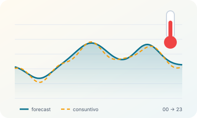
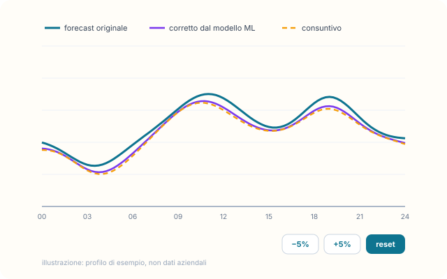
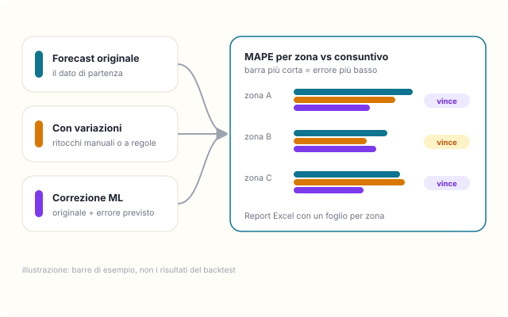
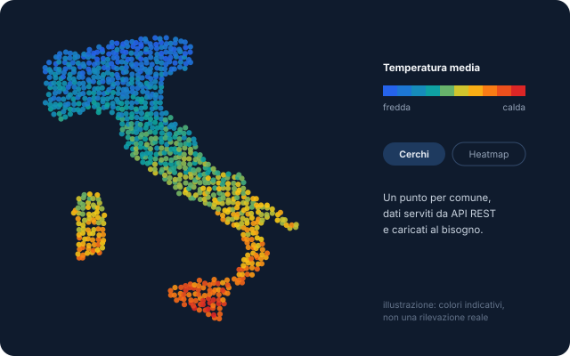

Un intervallo di date
Si sceglie il periodo e l'app applica a ogni giorno e a ogni zona la correzione ML e quella automatica, restituendo i risultati pronti da controllare.
Durante il lavoro su portfolio energetico e forecasting ho costruito una serie di strumenti in Python per chi prepara ogni giorno le previsioni di consumo: confronto tra forecast e consuntivo per zona elettrica, ritocchi guidati, una correzione con machine learning, l'elaborazione di più giorni insieme e una mappa delle temperature.

Una web app Streamlit legge i dati dal database aziendale e mette a confronto, per ogni zona elettrica, la previsione e il consumo reale con grafici Plotly interattivi. Si può lavorare sul database live o su un backup locale, utile quando la connessione non c'è.

illustrazione · forecastInvece di rifare la previsione da zero, il modello ML impara a prevedere l'errore del forecast esistente e lo corregge: forecast corretto = forecast originale + errore previsto. Un Random Forest per zona, ottimizzato con ricerca a griglia, su variabili di calendario (ora, giorno della settimana, mese) e festività italiane.
Un backtest confronta tre modelli (originale, con variazioni manuali, corretto dal ML) con il consuntivo tramite il MAPE e indica per ogni zona il migliore, con un report Excel.

illustrazione · backtestLa parte più ripetitiva del lavoro era trasformare le previsioni nei file da consegnare. L'ho portata dentro la stessa app.
Si sceglie il periodo e l'app applica a ogni giorno e a ogni zona la correzione ML e quella automatica, restituendo i risultati pronti da controllare.
Generazione dei file XML nel formato standard richiesto per il mercato del giorno prima (MGP) e per la piattaforma conti energia (PCE), revoche comprese, scaricabili in un unico archivio.
Le macro VBA da cui partiva il processo sono state riscritte in moduli Python leggibili, versionati e riusabili tra le pagine dell'app.
Le temperature pesano sui consumi, quindi servivano a colpo d'occhio. La prima versione generava un'unica pagina HTML enorme e lentissima da aprire; l'ho riprogettata separando dati e interfaccia: uno script estrae i dati dal database e li prepara in JSON, un server Flask li espone con API REST e la pagina li carica solo quando servono.

illustrazione · mappaDue applicazioni Python indipendenti che leggono dallo stesso tipo di sorgente: una per il forecast, multipagina in Streamlit, e una per le temperature, con backend Flask e frontend leggero.
Questi strumenti sono una parte di un progetto più ampio: l'architettura dati con SQL Server al centro, l'ETL dei consumi mensili, il meteo ponderato e la verifica degli ordini sono raccontati nella tesi ITS.
La tesi: il quadro d'insieme →Sono nati per uso interno in azienda: il codice non è pubblico e in questa pagina non ci sono dati aziendali. Curve, barre e mappa sono illustrazioni schematiche.
Forecasting, automazione e dashboard sono il filo che lega questi strumenti al mio lavoro di oggi.